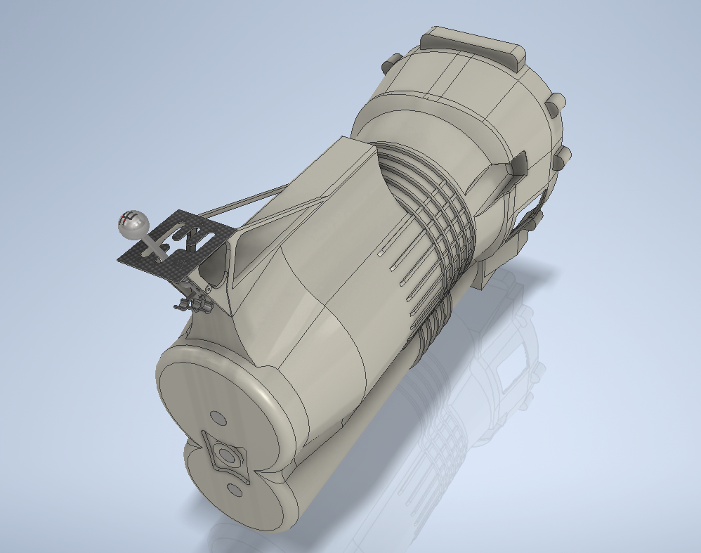
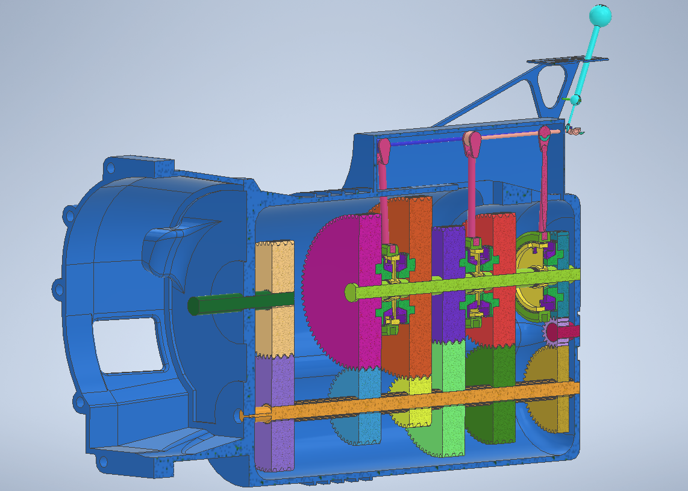
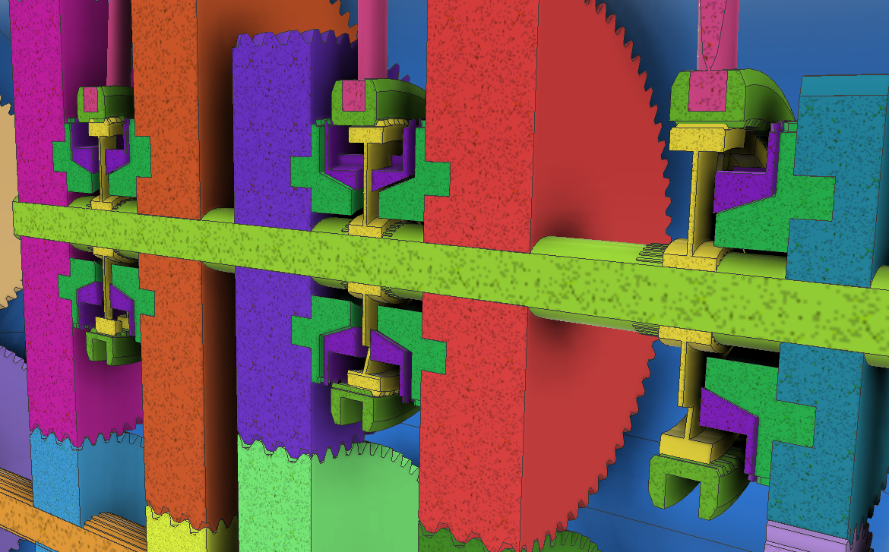

Transmission modeled in Autodesk Inventor. Gear ratios based on an Alfa Romeo Giulia 1300 4-speed.



This is a closeup of the gears and synchronizers. The latter being the hardest part of this project. They allow the output shaft (lime green shaft) to become connected to the chosen gear with minimal damage to either gears.
Simulation of shifting from neutral into gear done in Inventor Dynamic Simulation.